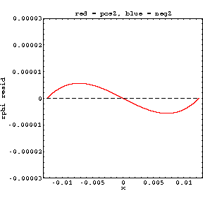
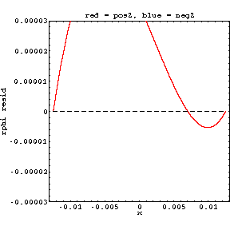
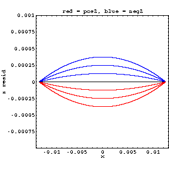
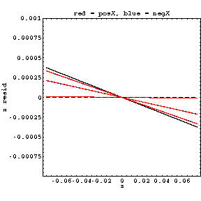

|  |  |
| layer 4 rphi vs X | layer 1 rphi vs X (In data, I thought the wild jumps came from poor efficiency (only partially-filled profile plots)) |
|  |  |
| zres vs x (SMILE PLOTS!) | zres vs z (easily mistaken for misalignment!!!) (In data, negative z has the opposite sign. I did splay zsensors out like this, though I thought it was a result of new y information...) |